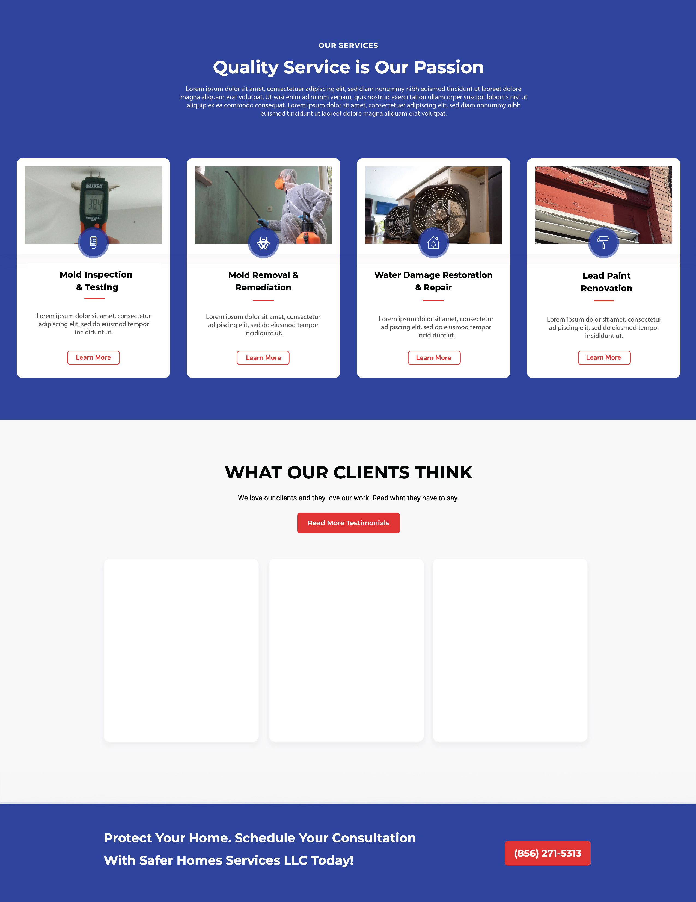
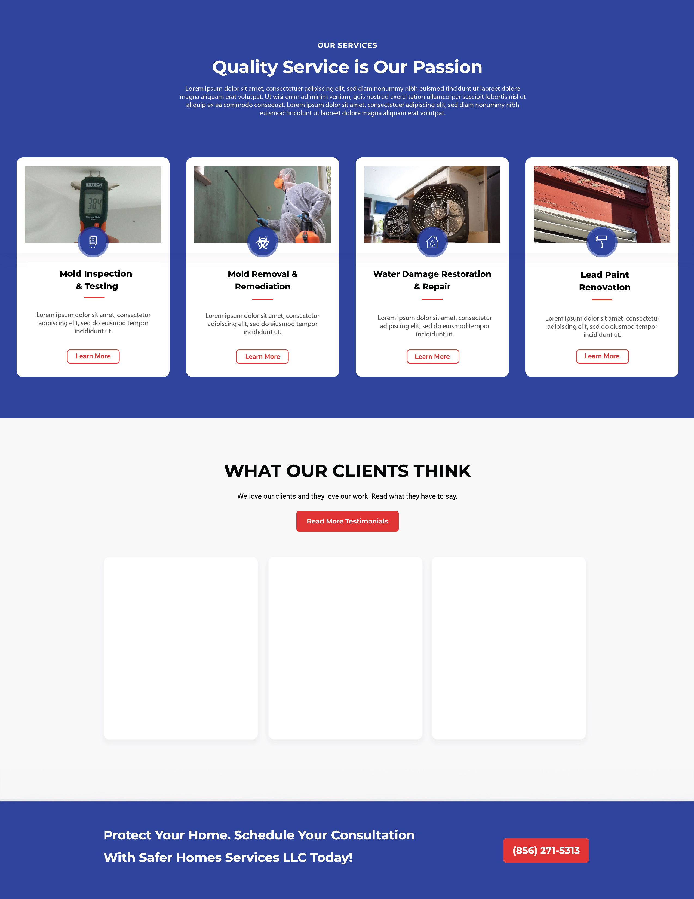

UX/UI Design & Full-Stack Web Development
Service Company Website
The client approached me with the goal of transforming their basic one-page website into a more comprehensive and functional platform that could better represent their brand and accommodate their growing business needs. My role involved both UX design and web development, allowing me to take full ownership of the project, from conceptualization to execution. Through extensive collaboration with the client, we aimed to create a website that not only met their aesthetic vision but also delivered a seamless user experience and optimized functionality across all devices.
Objectives:
- Implement a user-friendly platform that simplifies the user's experience
- Provide ample information about the company's services as well as public health knowledge
- Direct users to call/text/email for more information and to schedule service
Ideation &
Organization
As the UX designer, my first priority was to understand the client's vision and goals. During our initial discussions, we explored the overall brand message, user personas, and key objectives the website needed to fulfill.
One of the major shifts was moving from a one-page site to a multi-page structure. I designed a clear site architecture that allowed for intuitive navigation and easy access to essential information. Pages were organized to prioritize the most important content while reducing cognitive load for users.
Being a small, family-owned company, regular feedback sessions with the client were essential. I provided design updates at every stage to ensure alignment with their expectations, making tweaks to both aesthetics and usability based on their input.

 

Style
I pulled a blue and red color scheme from this client's existing logo and brand identity. Because of the boldness of these colors, I focused on integrating them in a way that provided helpful and minimal accents without being overbearing or confusing to the eye.
Given the client's extensive photography from recent projects, we strategically incorporated these visuals into the site to create a more relatable and impactful user experience. This approach allows potential customers to connect with the work and gain confidence in the company's ability to address their specific needs.
Prototyping, Development, & Interactivity
After finalizing the design, my focus shifted to developing a fully functional and scalable website. Since this client needed a website that their team could eventually manage themselves, I decided to use a WordPress CMS with an Elementor base theme. Elementor worked well for this project because it allows for vast customization within a user-friendly platform.
I focused heavily on optimizing the site's performance, ensuring that it loaded quickly and efficiently. This involved compressing images, minifying CSS and JavaScript files, and implementing lazy loading for media assets. Additionally, I worked on on-page SEO, structuring the site's metadata, and ensuring that the HTML structure was optimized for search engine crawlers.
Before the final launch, I conducted rigorous testing to ensure that all functionalities worked flawlessly. This included browser compatibility testing, performance testing using tools like Google Lighthouse, and accessibility checks to meet WCAG guidelines.
Once development was complete, I provided the client with a comprehensive walkthrough of the website's content management system. I created easy-to-follow documentation and offered training sessions so they could update the website independently moving forward.
Final Outcome
By the end of the project, we had transformed the client's one-page website into a dynamic and visually engaging platform that met their brand’s evolving needs. The new site offered users a clear and intuitive navigation experience while presenting the company’s services and content in a way that fostered engagement. Regular client feedback sessions ensured that the final product aligned perfectly with their vision. Through this project, we not only enhanced the aesthetic and functional elements of the website but also laid the groundwork for future growth and scalability. This project resulted in an increase in phone calls and form submissions by roughly 30-40% in the first 90 days.